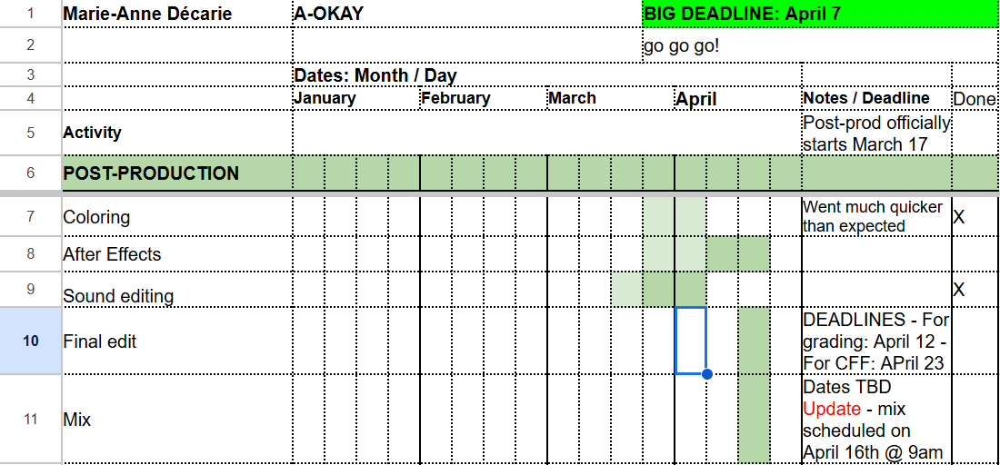
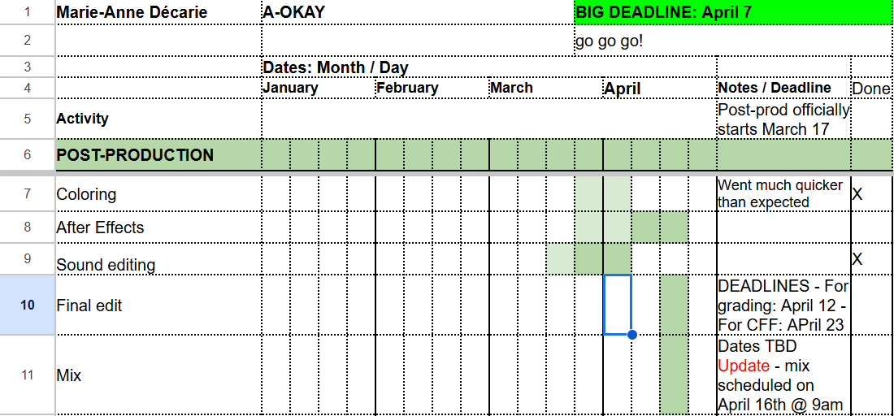

concept art


In a limbo area between reality and the cyberspace, a girl named Mars faces off against an evil, distorted clone of herself.
For me, making this film was about creating something bold, fast paced, and exciting. I love action scenes. I love choreographed fights. I love the cyberpunk genre, and characters with cool fashion, and big platform shoes. Packing all of this into one epic two-minutes film was the goal I set out to achieve, because in the end, the main reason why I make art is to create all the cool things I wish to see in the world. That simple!
Making this film 100% digitally was the obvious choice to create its cyberpunk-inspired aesthetic. My film’s visual language is all sharp angles, glowing surfaces, simulated glitches, code, video game references, and rapidly flashing lights. Every frame was first carefully hand-drawn and colored on the computer using the TVPaint Animation software, and it was then imported into Adobe After Effects where light, shading and visual effects made it truly come to life.
Underneath the sleek, shiny surface, this film is as much about excitement as it is about fear, and more precisely, the interconnected fears of technology, humanity, and oneself. On a personal level, it explores the idea of facing what we fear most, and the need to sometimes become some of the thing we fear in order to overcome it.
On a wider level, it’s about the eerie yet fascinating duality of wanting to create a thing that learns, acts and thinks exactly like us, and yet being so utterly terrified of said thing. It’s about corporations trying to replace us with things that will never quite be human. It’s about the fear I think we all experience in the face of the rapid spread of AI technology, and the fear of how far humanity is willing to go to destroy itself in the name of ‘progress’.
Ultimately, Mars’ combat is about facing her most terrifying enemy ever and perhaps becoming a little bit of the thing that she feared so much in the process. We might ask ourselves: was she even the hero to begin with?
In the end, is everything really going to be A-OKAY?


 

Subtotal: 2425$
Total hours: 252hrs
Example salary: 20$/hr
Subtotal: 5040$